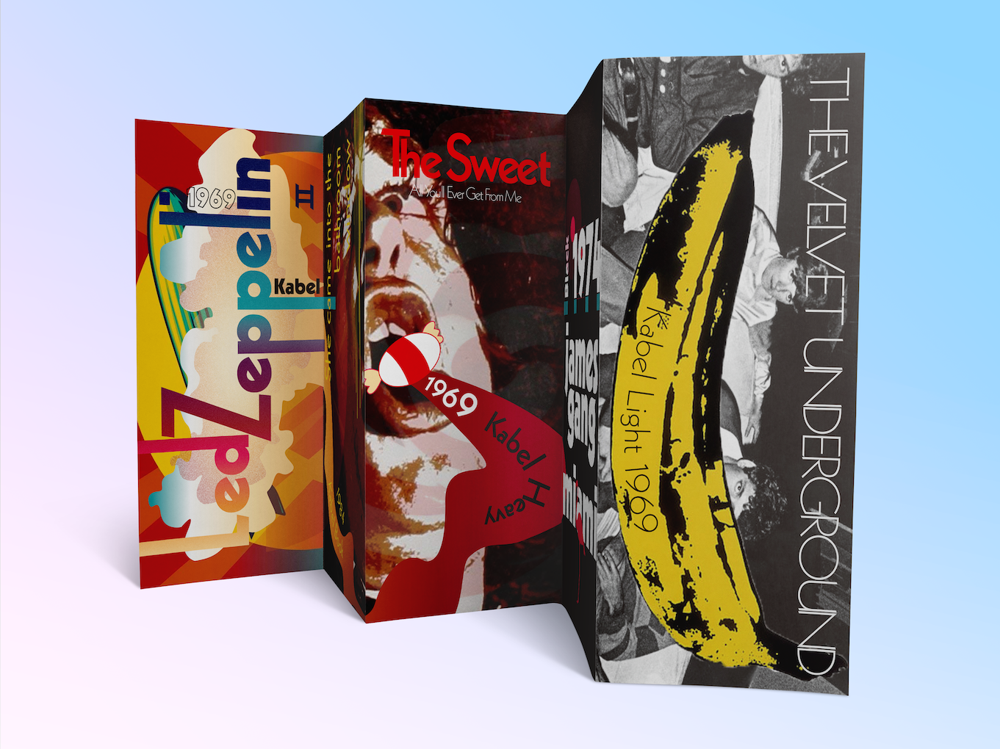

The mission of this project is to create a type specimen book based on a music genre.
The 60s is an era ironically full of both controversies and hope. There were several breakthroughs in technology and we also put the first man on the moon. On the other hand, the Vietnam War, the civil rights movement and the assassinations of Martin Luther King Jr. and John F. Kennedy were tearing apart society, which simultaneously bonded a group of people together and created an era of prosperity for music. Rock music defined the 60s as well as determined the identity of that generation. There are rebellious, doubtful, questioning, free and hopeful in this music. I think it is rebelliousness that brought out the desire to make changes. While the government was seeking power and fame, people were looking back to the origins of happiness.
Kabel font is one of the most famous Geometric Sans typefaces derived from simple geometric shapes – circles, triangles and rectangles – with minimal contrast and even widths. Some might say Kabel font is too “designed,” while I think this overwhelming design is a perfect endorsement of the 60s.

I use a gradient rainbow color, which is derived from the color in stages lighting, as the main theme. This color palette presents the magical and dreamy sense of the 60s, when people simply wanted to be happy and equal. On one side of the brochure, I have re-designed five iconic album covers that use Kabel font, and on the other side present the features and some characteristics of Kabel font. When the brochure is fully expand, it can be hung like a poster.